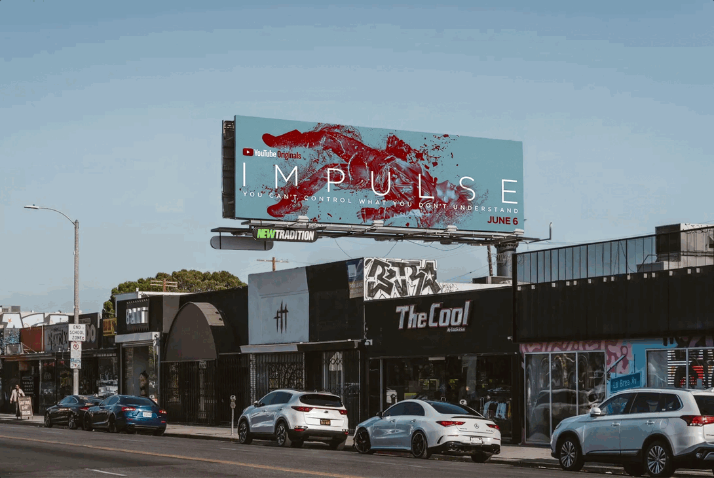
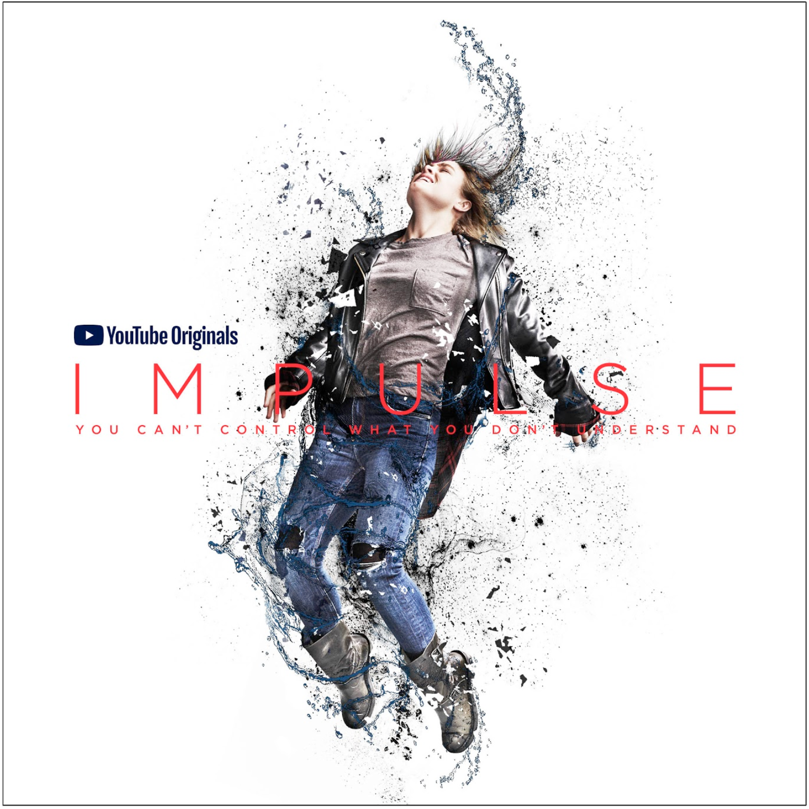
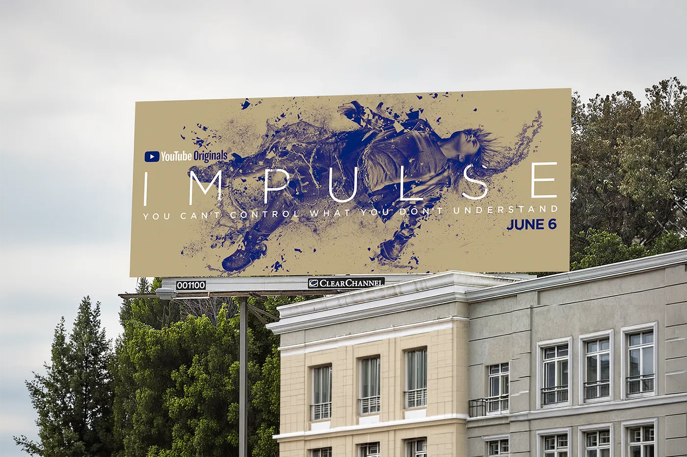
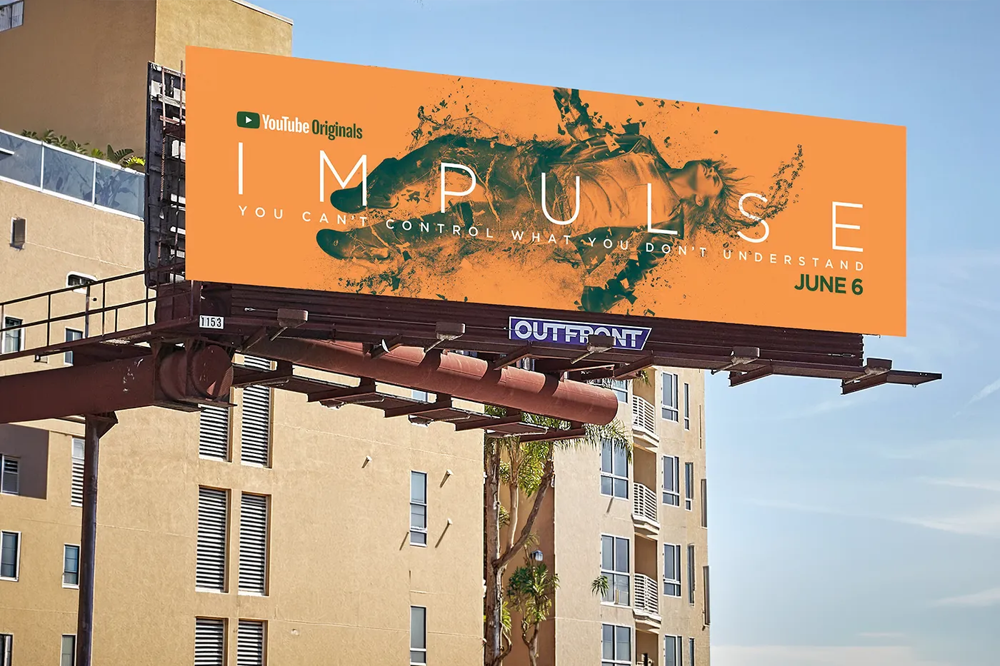
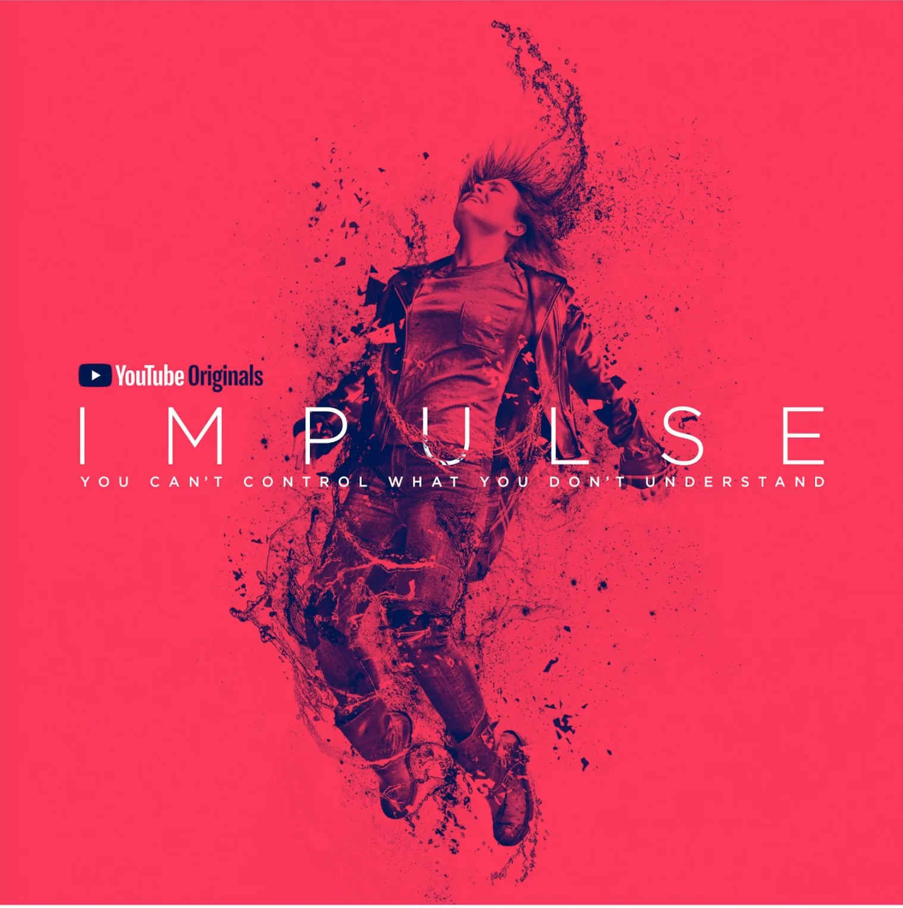

Impulse
An idyllic small town community with something sinister lurking under the surface
Impulse was a brand new series and YouTube's largest content bet of the year. But unlike earlier Originals anchored to built-in creator audiences, this title had no audience to rely on. So we made the world the entry point, using tone, story, and the pedigree of Doug Liman to pull people in.
We introduced Impulse by building Reston as a place you could observe, question, and slowly piece together. A steady stream of YouTube content blurred the line between normal and not quite right, inviting viewers to look closer and start forming their own theories.
Town of Reston presented the town as it wanted to be seen: quiet, safe, familiar. Beneath those assurances, the imagery told a different story, with fleeting glimpses of violence, secrecy, and instability hinting at something just under the surface.
People of Reston shifted the focus from place to perspective. Through fragmented, emotionally charged testimonials, characters spoke around the truth instead of directly at it, revealing tension, suspicion, and buried secrets without ever fully explaining them.
Together, these series established tone before plot, turning a small town into a question mark and its people into pieces of a mystery the audience wanted to solve.
As intrigue built, the campaign began to sharpen, transitioning from atmosphere to narrative through a teaser and trailer that introduced Henry, her power, and the consequences of not understanding it.
The trailer was nominated for a 2018 Golden Trailer Award, but as usual, we lost to Stranger Things.
As part of a larger out-of-home campaign across New York and Los Angeles, we explored a physical stunt that brought Impulse's central idea into the real world.
A billboard on LA's busy Melrose Ave. would appear as expected—clean, intact, part of the usual landscape of outdoor ads. Then overnight, something happens. The structure buckles inward, the surface warped and torn, as if the space itself collapsed.
The transformation mirrors Henry's power, where moments of trauma leave a visible impact on the world around her. The shift was designed to be discovered, documented, and shared—a visual interruption that people couldn't ignore or explain.
A concept leading to a simple question at the center of Impulse: did you see that?
Impulse follows a teenage girl whose ability to teleport is involuntary and impossible to control. To launch the series on YouTube, we brought the concept of unpredictable teleportation into unexpected places: the homes of top YouTube creators.
A character from the show began appearing, unannounced, in the background of their videos. He would flicker into frame, glance around, and disappear. No acknowledgment or explanation from the creator, just a moment you'd only catch if you were paying attention.
Then it started happening again. And again. Across more than a dozen channels within 48 hours.
Viewers did the rest—rewinding, screenshotting, and flooding the comments with theories. The platform itself became part of the story, turning passive viewers into active participants in the mystery.
The stunt served as the crescendo of a broader integrated campaign that spanned large-scale out-of-home takeovers in New York and Los Angeles, including billboards that appeared "crushed" overnight, alongside a full push across social, digital, and traditional media.
The strategic combination of traditional and unexpected executions also drew press attention, earning additional coverage and amplifying a launch that felt as fresh and unpredictable as the story itself.
Hero Assets
Teaser
Trailer
Town of Reston
How Far Would You Go?
Community Disservice
Irresponsible Adults
Small Town, Big Mystery
The Kids Aren't Alright
People of Reston
Henry Coles
Cleo Coles
Bill Boone
Clay Boone
Jenna Hope
Deputy Anna Hulce
Lucas Boone




